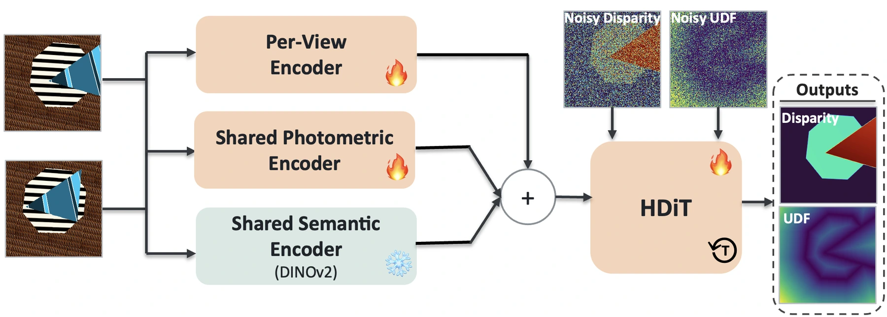
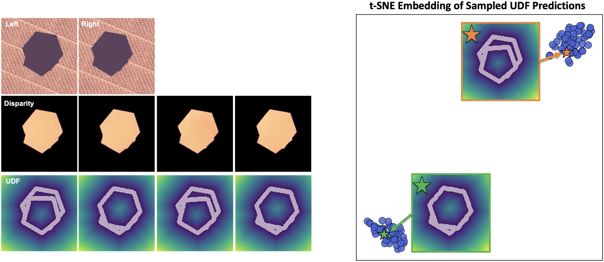

True disparity ·
NeurIPS 2026 Workshop · Physical World Models
Do Deep Stereo Models Learn Shape Priors?
State-of-the-art stereo networks still misplace the edges of simple polygons, even after training on them. HDiT-Stereo samples disparity together with a boundary distance field, and puts those edges where they belong.
Harvard University
Abstract
Abstract
Localizing object boundaries is important for embodied visual systems, since small boundary errors can change the inferred geometry of physical surfaces. We study whether deep stereo models produce boundaries consistent with simple shape priors when local image and disparity cues are weak. We create a synthetic stereo dataset consisting of objects drawn from a highly constrained family of shapes, with randomized depth, slant, color and texture. Despite the simplicity of this shape space, we find that several state-of-the-art stereo models retain systematic boundary errors, even when finetuned or trained from scratch on the dataset. We then introduce a simple generative stereo model that jointly predicts disparity and a distance field representing object boundaries. The model improves boundary localization and produces contours that adhere more closely to the underlying shape space. These results expose limitations in the boundary predictions of current stereo architectures when local evidence is weak, and motivate further study of whether generative models can better combine regional grouping evidence with global geometric structure.
Dataset
Turn the difficulty up
Every object is a planar regular polygon with up to eight sides, rendered exactly by our generator. We control how much local evidence a boundary has through three factors. Change them below; the scene geometry stays the same, so only the chosen factor changes. With the same texture and no depth gap, nothing local marks where the front object ends.
Appearance
Surface slant
Depth separation
Scene
Left
Right
True disparity
Shown at 256 px for display; the training and test sets use 128 px.
Method
HDiT-Stereo samples disparity and boundaries together
We adapt the hourglass diffusion transformer (HDiT) to stereo. Starting from noise, it denoises two maps on the left-image grid: disparity, and an unsigned distance field whose zero level set marks the object boundaries. The denoiser is conditioned on per-view image features and on two left–right correlation volumes, one from a small trainable CNN and one from frozen DINOv2 features.

Results
Most accurate on every boundary metric
| Boundary & contour | Global | |||||
|---|---|---|---|---|---|---|
| Method | Training | Bound. EPE | Chamfer | Hausd. 99 | EPE | Bad-2 % |
| RAFT-Stereo | from scratch | 0.792 | 0.345 | 1.37 | 0.118 | 1.71 |
| Selective-IGEV | fine-tuned | 0.803 | 0.344 | 1.35 | 0.125 | 1.73 |
| MonSter | fine-tuned | 0.795 | 0.355 | 1.44 | 0.130 | 1.74 |
| DEFOM-Stereo | fine-tuned | 0.831 | 0.365 | 1.59 | 0.144 | 1.83 |
| FoundationStereo | zero-shot | 4.086 | 2.614 | 11.98 | 4.261 | 28.70 |
| HDiT-Stereo Base | mean of 10 | 0.836 | 0.355 | 1.59 | 0.192 | 1.80 |
| HDiT-Stereo | mean of 10 | 0.736 | 0.309 | 1.29 | 0.147 | 1.50 |
Mean over 1000 test scenes; all errors in pixels, lower is better. Each baseline is shown in its stronger training regime on our data (from scratch or fine-tuned); zero-shot versions of the four are an order of magnitude worse. Base is trained on disparity alone, without the boundary field or correlation encoders. Full table in the paper.
Figure–ground ambiguity
Two valid readings, two modes
When two overlapping objects share texture and depth, the images do not say which one owns the shared edge, and people often see such displays flip. Disparity is identical under both readings; only the boundaries differ.
Across 100 samples of the scene below, HDiT-Stereo's disparity stays the same while its boundary fields split into two clusters, each next to one of the two valid answers. A model that outputs one disparity map cannot represent this.
